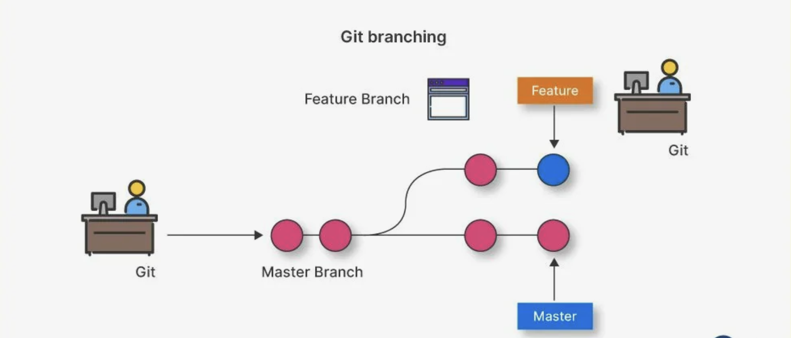

Как добавить файлы в staging area?
Перетащите карточки, которые составят правильную команду:
[[1]][[2]]
Позиции:
Доступные варианты для перетаскивания:
Представь, что ты пишешь книгу. Основная рукопись (чистовик) лежит на столе. Если ты захочешь поэкспериментировать с новой сюжетной линией или переписать главу, ты не будешь вырывать страницы из оригинала. Ты возьмешь стопку чистой бумаги (сделаешь копию) и будешь править её. Если эксперимент удался — ты перенесешь правки в оригинал. Если нет — просто выбросишь черновик.
Ветка (branch) в Git — это и есть такой «черновик» или «параллельная вселенная». Это независимая линия разработки, которая позволяет изолировать свою работу, будь то новая функция, исправление бага или эксперимент, не мешая другим и не ломая стабильную версию проекта.

Когда ты создаешь репозиторий, Git автоматически создает для тебя первую ветку. Раньше она называлась master, сейчас чаще используется имя main. (Но у нас пока это все-таки master) Это основная ветка проекта. Обычно здесь хранится самая стабильная, рабочая версия кода.
Указатель HEAD — это особый указатель, который показывает, где именно (в какой ветке и на каком коммите) мы сейчас находимся.
Введите ФИО и номер группы каждого, кто в ваше команде
Чем Agile отличается от Waterfall?
Что такое жизненный цикл ПО?
а
b
c
1 вопрос
Спринт
Эпик
Ежедневная встреча
Бэклог продукта
Какая команда добавляет измененные файлы в staging area Git?
git commit
git commit
git push
git add
git pull
Что делает команда git rebase?Объединяет две ветки, создавая коммит слияния.
Переносит коммиты из одной ветки на другую, создавая новую историю коммитов.
Удаляет ветку.
Переименовывает ветку.
Что такое жизненный цикл ПО?
Процесс создания игры
Все этапы разработки ПО от идеи до вывода из эксплуатации
Написание кода
Какие директивы препроцессора обычно используются вместе для создания “header guards” (защиты от множественного включения) в C/C++?
#include, #define, #endif
#ifdef, #else, #endif
#ifndef, #define, #endif
#pragma once, #include
Что произойдет, если вы попытаетесь сделать git push в ветку, в которой вы не являетесь единственным разработчиком, и ваш локальный репозиторий отстает от удаленного?
Push будет выполнен успешно, просто ваши изменения будут поверх старых
Git автоматически объединит (merge) удаленные изменения с вашими локальными и выполнит push
Git отклонит ваш push и предложит сначала выполнить `git pull`, чтобы обновить ваш локальный репозиторий
Push будет выполнен, но создаст конфликт, который нужно будет разрешить вручную
Какой этап жизненного цикла следует после «Проектирования»?
Тестирование
Разработка
Сопровождение
Какая методология предполагает строго последовательные этапы?
Agile
Waterfall
Scrum
Вы нашли файл secret_passwords.txt, но он не должен попасть в репозиторий. Как его спрятать?
Добавить коментарий «Это не то, что вы ищете!»
Зашифровать и назвать innocent_cat_video.mp4
Добавить его в .gitignore и сделать git rm --cached
Отправить его в ветку forget-this, а потом удалить
Что такое Git Hooks и для чего они используются?
Это специальные команды Git, которые позволяют скрывать файлы от других разработчиков.
Это скрипты, которые автоматически запускаются Git'ом перед или после определенных событий (например, коммита, push).
Это команда для переименования веток.
Это команда для создания резервных копий репозитория.
Какие типы ошибок лучше всего обнаруживаются динамическими анализаторами кода?
Синтаксические ошибки
Ошибки времени выполнения, такие как утечки памяти, ошибки доступа к памяти, переполнения буфера, оформления
Ошибки времени выполнения, такие как утечки памяти, ошибки доступа к памяти, переполнения буфера, гонки данных
Ошибки, связанные с неиспользованием функций
Выберите верное утверждение
Динамический анализ может обнаружить ошибки, связанные с сложным взаимодействием компонентов системы.
Динамический анализ не требует наличия исходного кода.
Динамический анализ не выдает ложных срабатываний.
Опишите стратегию юнит-тестирования “черного ящика” (black-box testing)
Тестирование кода без знания его внутренней структуры
Тестирование кода с доступом ко всем внутренним переменным и функциям
Тестирование производительности кода
Тестирование интеграции кода с другими модулями
Что произойдет, если вы попытаетесь сделать git push в ветку, в которой вы не являетесь единственным разработчиком, и ваш локальный репозиторий отстает от удаленного?
a
b
c
d
Как Git обеспечивает доступ к файлам в разных коммитах, если при каждом коммите создается снимок состояния всего репозитория?
Git хранит полные копии файлов, но использует content-addressable storage, чтобы избежать дублирования одинаковых файлов между коммитами
Git хранит только изменения (diffs) между коммитами
Git хранит полные копии файлов только для ключевых коммитов, а для остальных – изменения.
Вы работаете над веткой feature/complex и внесли несколько коммитов. Вы выполнили git pull --rebase origin/feature/complex, и rebase прошел успешно.
После этого, другой разработчик (назовем его Разработчик Б), также работающий над feature/complex, выполнил git pull --rebase origin/feature/complex, разрешил конфликты (если были) и успешно выполнил git push origin feature/complex. Таким образом, удалённая ветка origin/feature/complex теперь содержит его коммиты, которых нет в вашей локальной ветке.
Теперь вы хотите отправить свои изменения на удаленный репозиторий, но при этом сохранить все коммиты, которые Разработчик Б добавил в удаленную ветку. Какую последовательность действий вам следует предпринять?
Выполнить git push --force origin feature/complex, чтобы перезаписать удаленную ветку своими локальными изменениями (это удалит коммиты Разработчика Б).Поскольку вы уже выполнили git pull --rebase, просто повторите git pull --rebase origin feature/complex, а затем git push origin feature/complex.Выполнить git pull origin feature/complex, разрешить возникшие конфликты слияния (если есть), выполнить git commit, а затем git push origin feature/complex.Откатиться к коммиту, предшествующему вашему git pull --rebase, и начать работу заново.Что такое Git Hooks и для чего они используются?
a
b
c
d
Вопрос, ответ на который нужно самому (самой) поискать
Какова была основная причина, побудившая Линуса Торвальдса к созданию Git?
Он хотел создать более простую в использовании систему контроля версий
Он был недоволен существующими проприетарными системами контроля версий, которые использовались для разработки ядра Linux, особенно после того, как BitKeeper стал недоступен бесплатно
Он хотел создать систему контроля версий, работающую быстрее, чем Subversion
Он хотел создать систему контроля версий, которая бы лучше поддерживала распределенную разработку
Как получить изменения из удаленного репозитория и объединить их с локальными?
a
b
c
Как удалить ветку "experiment"?
a
b
c
Что делает git reset --hard HEAD~1?
a
b
c
Какое из следующих утверждений лучше всего описывает цель статического анализа кода?
a
b
c
d
Какие типы ошибок лучше всего обнаруживаются динамическими анализаторами кода?
a
b
c
d
В чем основное преимущество статического анализа перед динамическим?
a
b
c
d
Какой этап жизненного цикла следует после «Проектирования»?
a
b
c
2 вопрос
Вайп-лимит
WIP-лимит
Спринт-лимит
Флоу-лимит
Какая команда фиксирует изменения, добавленные в индекс (staging area), в репозиторий Git?
git add
git commit
git push
git status
Какой эффект гарантированно возникает при использовании git rebase вместо git merge для интеграции изменений из одной ветки в другую?
Всегда будет меньше конфликтов.
История коммитов будет содержать меньше информации о том, как именно происходила интеграция изменений.
Новые коммиты будут добавлены только в целевую ветку, а не в исходную.
Ничего не поменяется.
int* allocate_memory(int size) {
int *ptr = (int*)malloc(size * sizeof(int));
if (ptr == NULL) {
perror("malloc failed");
return NULL;
}
return ptr;
}
int main() {
int *arr = allocate_memory(10);
if (arr != NULL) {
arr[10] = 5;
free(arr);
}
return 0;
}a
b
c
d
#include <stdio.h>
#include <string.h>
int main() {
char str1[10];
char str2[] = "This is a long string";
strcpy(str1, str2);
printf("%s\n", str1);
return 0;
}a
b
c
d
Какая модель ветвления изображена на слайде?
a
b
c
d
Какая модель ветвления изображена на слайде?
a
b
c
d
Какие директивы препроцессора обычно используются вместе для создания “header guards” (защиты от множественного включения) в C/C++?
a
b
c
d
Выберите, какие части в этом Makefile соответствуют цели (ям):
a
b
c
d
e
Выберите, какие части в этом Makefile соответствуют зависимости (ям):
a
b
c
d
e
Выберите, какие части в этом Makefile соответствуют командам:
a
b
c
d
Опишите стратегию юнит-тестирования “черного ящика” (black-box testing).
a
b
c
d
Вы нашли критическую уязвимость в банковском приложении. Что следует сделать в первую очередь?
a
b
c
d
Вы нашли критическую уязвимость в банковском приложении. Что следует сделать в первую очередь?
a
b
c
d
Какая методология предполагает строго последовательные этапы?
a
b
c
Какое из следующих понятий описывает процесс предоставления доступа к программному обеспечению конечным пользователям?
Разработка
Тестирование
Развертывание
Сопровождение
Какая команда показывает статус репозитория Git, включая измененные, добавленные и неотслеживаемые файлы?
git log
git commit
git status
git add
В каком из перечисленных сценариев использование git rebase с наибольшей вероятностью приведет к проблемам для других членов команды?Работа над новой фичей в локальной ветке, еще не опубликованной в удаленный репозиторий.
Исправление опечатки в последнем коммите локальной ветки перед публикацией.
Реорганизация нескольких связанных коммитов в локальной ветке для улучшения читаемости.
Изменение истории общей удаленной ветки delevop, на которой активно работают несколько разработчиков.
Команда из 5 человек разрабатывает приложение для управления умным домом. Требования часто меняются из-за обратной связи бета-тестеров, сроки сжатые. Какой подход наиболее эффективен для организации процесса разработки?
a
b
c
d
Что такое «спринт» в Scrum?
a
b
c
Какая команда отправляет локальные коммиты в удаленный репозиторий?
git pull
git fetch
git push
git commit
Вы работаете в большой команде, которая выпускает новые версии программного обеспечения каждый месяц и поддерживает предыдущие версии с исправлениями ошибок. Какая стратегия ветвления лучше всего подходит для организации этого процесса?
GitHub Flow
Trunk-Based Development
Gitflow
Feature Branching
Какие элементы обязательно содержит коммит в Git?
Сообщение коммита, список измененных файлов и имя автора
Список изменений, имя автора, дата коммита и ссылка на родительский коммит
Сообщение коммита, список измененных файлов, имя автора, дата коммита и SHA-1 хеш
Все вышеперечисленное
Какие ветки обычно используются в Gitflow? (Выберите все подходящие ответы)
master
develop
feature/*
release/*
hotfix/*
Вы нашли файл secret_passwords.txt, но он не должен попасть в репозиторий. Как его спрятать?
a
b
c
d
Что такое репозиторий (repository) в Git?
Локальная копия веб-сайта
Хранилище файлов и их истории изменений
Облачное хранилище файлов
Инструмент для автоматической сборки проекта
В чем заключается основное отличие GitHub Flow от Gitflow?
GitHub Flow более сложная и многословная, чем Gitflow.
GitHub Flow более простая и ориентирована на непрерывную интеграцию и доставку.
Gitflow не использует ветки feature. d) GitHub Flow не использует ветки develop.
Как создать ветку secret-feature и сразу переключиться на нее?
a
b
c
Какая ветка в GitHub Flow всегда содержит код, готовый к развертыванию?
develop
master
feature/*
release/*
Вы не закончили работу, но нужно срочно переключиться на другую ветку. Как сохранить изменения?
a
b
c
d
В чем суть стратегии ветвления Trunk-Based Development (TBD)?
Разработка ведется в отдельных ветках, которые долго не вливаются в основную ветку.
Разработка ведется непосредственно в главной ветке (trunk) небольшими, частыми коммитами.
Разработка ведется с использованием большого количества веток для каждой фичи, релиза и хотфикса.
Trunk-Based Development — это стратегия, не использующая ветки вообще.
Как переименовать последний коммит?
a
b
c
d
Как Git хранит блоб-файлы?
В виде обычных файлов в файловой системе
Как сжатые и зашифрованные данные в базе данных
Как объекты с уникальным SHA-1 хешем, идентифицирующим их содержимое
Как ссылки на файлы в рабочем каталоге
Предположим, вы выполнили git rebase master в своей локальной ветке feature. Во время rebase возник конфликт в файле myfile.txt. Вы разрешили конфликт, добавили изменения в индекс (git add myfile.txt) и выполнили git rebase --continue. Что произойдет, если во время следующего этапа rebase возникнет конфликт в том же файле myfile.txt, но другой части файла?
Git автоматически применит предыдущее разрешение конфликта.
Git выдаст ошибку и прервет rebase.
Git снова запросит разрешение конфликта в файле myfile.txt
Git автоматически пропустит этот этап rebase.
Что делает команда git add . по отношению к файлам, отображаемым в git status?
Удаляет все неотслеживаемые файлы.
Добавляет все измененные и неотслеживаемые файлы в индекс.
Коммитит все измененные файлы.
Сравнивает текущие файлы с последним коммитом.
В чем разница между git commit -m "message" и git commit?
git commit -m "message" создает новый репозиторий, а git commit добавляет файлы в текущий репозиторий
git commit -m "message" позволяет объединить несколько коммитов, а git commit создает отдельный коммит для каждого изменения
git commit -m "message" создает коммит с коротким сообщением, указанным непосредственно в командной строке, а git commit открывает текстовый редактор, где можно написать более подробное сообщение о коммите
git commit -m "message" используется для работы с удаленным репозиторием, а git commit — с локальным
Что делает команда git push origin master?
Получает обновления из ветки master удаленного репозитория origin.
Отправляет локальную ветку master в удаленный репозиторий origin.
Создает новую локальную ветку master в удаленном репозитории origin.
Удаляет ветку master из удаленного репозитория origin.
Что делает команда git stash?
Удаляет все несохраненные изменения из рабочей директории
Временно сохраняет (stash) изменения в рабочей директории, чтобы можно было переключиться на другую ветку или выполнить другую задачу без коммита
Отправляет изменения на удаленный сервер
Объединяет две ветки
Создает новую ветку
Какую информацию отображает команда git status?
Список всех коммитов в репозитории
Статус файлов в рабочей директории и индексе
Список удаленных репозиториев
Текущую ветку и количество коммитов в ней
В каких ситуациях Kanban может быть более предпочтительным, чем Scrum?
Когда необходимо обеспечить непрерывную поставку небольших обновлений и исправлений
Когда требования проекта четко определены и не меняются
Когда необходимо визуализировать рабочий процесс
Когда требуется четкое планирование на основе спринтов
Когда команда имеет высокую степень самоорганизации и может самостоятельно принимать решения о приоритетах
Выберите верное утверждение:
a) Scrum использует спринты с фиксированной длиной, Kanban фокусируется на непрерывном потоке работы.
b) Scrum требует наличия Scrum-мастера, в то время как Kanban не имеет жестко определенных ролей.
c) Kanban использует доски Kanban для визуализации задач, а Scrum - нет.
d) Все вышеперечисленное.
а
b
c
d
Команда uname:
Выводит информацию о системе.
Выводит имя хоста
Выводит имя текущего пользователя
В методологии Waterfall изменения в требованиях, выявленные на этапе тестирования, легко и быстро вносятся в проект.
Правда
Ложь
Команда whoami
Выводит имя текущего пользователя
Выводит имя хоста
Выводит информацию о системе
Какая основная цель использования веток в системе контроля версий, такой как Git?
Увеличение размера репозитория
Разработка новых функций, исправление багов и проведение экспериментов, не влияя на стабильность основной кодовой базы
Ускорение работы команды
Объединение нескольких репозиториев в один
Улучшение скорости работы с Git
Вы написали отличное сообщение коммита, но случайно допустили опечатку. Какую команду можно использовать, чтобы исправить это сообщение?
git commit --amend -m "Новое описание"
git commit --amend "Старое описание" -m "Новое описание"
git commit --rewrite -m "Новое описание"
git commit -m "Новое описание"
git commit -rewrite "Старое описание" -m "Новое описание"
Согласны ли вы с утверждением?
Жизненный цикл программного обеспечения (ПО) — это процесс, который охватывает все этапы разработки, от первоначальной идеи до поставки продукта заказчику.
Да
Нет
Какое из следующих определений наиболее точно описывает понятие “жизненный цикл программного обеспечения (ПО)”?
Процесс написания кода для программы.
Процесс тестирования программы на ошибки.
Совокупность этапов разработки, эксплуатации и вывода из эксплуатации программного обеспечения.
Процесс проектирования интерфейса программного обеспечения.
Как посмотреть историю коммитов?
git add
git push
git log
git commit
git checkout
Манифест НЕТ ТЗ - НЕТ ПРОДУКТА относится:
к водопадной модели
в agile модели
Манифест КАЧЕСТВО ПРОДУКТА ВАЖНЕЕ ДОКУМЕНТАЦИИ относится
к водопадной методологии
к гибкой методологии
Какая команда используется для переключения между ветками в Git?
git branch
git commit
git merge
git checkout
git push
Можно ли переключиться на ветку, в которой есть незакоммиченные изменения, которые конфликтуют с содержимым текущей ветки?
Да, Git автоматически разрешит конфликты
Да, Git переключится на ветку и перезапишет все локальные изменения
Нет, Git выдаст ошибку, так как переключение приведет к потере изменений или созданию конфликта
Вы переключились на ветку dev и внесли изменения. Что нужно сделать перед переключением на ветку master, если вы хотите сохранить эти изменения?
Ничего, Git автоматически сохранит изменения
Выполнить git push dev
Выполнить git stash pop
Закоммитить эти изменения (git commit). Или использовать git stash, если не хотите коммитить сейчас
Выполнить git merge dev
Выберите один или несколько примеров Прикладного ПО Общего назначения
Проводник (File Explorer) в Windows
Chrome
Excel
VLC Media Player
Windows 10
MacOS
Драйверы для звуковых карт
BIOS
Что является основной целью фазы “Проектирование” в жизненном цикле разработки программного обеспечения?
Написание кода программного обеспечения.
Определение пользовательских требований.
Создание архитектуры и структуры программного обеспечения.
Выявление ошибок и их исправление.
Выберите один или несколько примеров Системного ПО:
windows 11
windows 7
Android
Драйвер для принтера Canon
Утилита для форматирования дисков
Word
C++
Paint
1C: Платформа
Adobe Photoshop
Что делает команда git merge?
Удаляет ветку
Объединяет изменения из одной ветки в другую
Создает новый коммит
Отправляет изменения в удаленный репозиторий
Создает новую ветку
Что такое “конфликт” в Git?
Ситуация, когда два пользователя пытаются отправить изменения в одну и ту же ветку одновременно
Ситуация, когда Git не может автоматически слить изменения из двух разных веток
Ошибка в коде
Ситуация, когда удаленный репозиторий недоступен
Что такое Scrum?
Язык программирования
Язык программирования, который позволяет быстро создавать масштабируемые приложения с использованием искусственного интеллекта.
Фреймворк (framework) для реализации Agile, использующий спринты, роли (Scrum Master, Product Owner, Development Team) и ритуалы (Daily Scrum, Sprint Planning, Sprint Review, Sprint Retrospective)
Строгий каскадный процесс, который необходимо соблюдать для всех этапов разработки ПО, чтобы избежать ошибок
Система, в которой команда разработчиков работает изолированно, не общаясь с Product Owner’ом, так как Product Owner все равно ничего не понимает в технической стороне, и его задача - просто согласовывать конечный результат
Что такое ветка (branch) в Git?
Удаленный репозиторий
Команда для добавления изменений
Независимая линия разработки, позволяющая работать над изменениями изолированно
Сообщение, описывающее коммит
Индекс (staging area)
Команда git
Правильный ответ: git checkout, checkout
Регистр букв не учитывается
)
Правильный ответ: fast-forward merge, fast forward merge
Регистр букв не учитывается
??? – это процесс поиска и исправления ошибок или неполадок в исходном коде какого-либо программного обеспечения.
В качестве ответа укажите ОДНО пропущенное слово
Правильный ответ: Отладка, отладка
Регистр букв не учитывается
Представьте, что вы работаете над файлом my_file.txt, и вы только что внесли в него изменения. Теперь вы хотите сохранить эти изменения в репозитории. Используйте однукоманду Git, чтобы добавить изменения в my_file.txt в область подготовленных изменений (staging area).
Правильный ответ: git add ., git add my_file.txt
Регистр букв не учитывается
Вы хотите получить локальную копию репозитория с названием “my_project”, расположенного по адресу https://gitlab.com/my_username/my_project. Используйте одну команду Git, чтобы клонировать этот репозиторий в текущую директорию.
Правильный ответ: git clone https://gitlab.com/my_username/my_project.git, git clone
Регистр букв не учитывается
Что пропущено?
Разработка = анализ + ??? + программирование + тестирование + отладка
В качестве ответа укажите ОДНО СЛОВО
Правильный ответ: Проектирование, проектирование
Регистр букв не учитывается